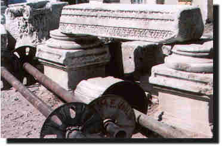

| Attuda (Hisarköy) Denizli ili, Sarayköy ilçesi sýnýrlarý içerisinde ve ilçenin yaklaþýk 17 km güneybatýsýnda yeralmaktadýr. Antik dönemde Caria ve Phrigia arasýnda bir sýnýr kentidir. Çürüksu vadisinde bulunan Tripolis ve Laodiceia'yý Aphrodisias'a baðlayan en kýsa yol Attuda'dan geçmektedir. Kentin ilk kuruluþu hakkýnda kesin bir bilgi bulunmamasýna raðmen Lykos vadisinde kurulan kentlerle çaðdaþ olduðu ve Hellenistik dönemde kurulmuþ olduðu tahmin edilmektedir. Lykos vadisindeki kentler ile Aprodisias arasýndaki ticari, ekonomik ve sanatsal iletiþimleri kurmada önemli bir rol oynamýþtýr. Antik kaynaklarda, Attuda'da Men kültü olduðu, bu tanrýya ait bir tapýnak yapýlarak tapýnýldýðý, tapýnak içinde at üzerinde tanrý Men'e ait heykel bulunduðu yazýlmaktadýr. Ayrýca, Zeus, Apollon, Dionysos ve Asklepios heykelleri ile Artemis Anaitis kültünün de Attuda'da bulunduðunu antik kaynaklar yazar. Antik kentte imparatorluk öncesi ve sonrasýnda Günümüzde antik kentin bulunduðu alanda Hisarköy yer aldýðýndan yüzeyde herhangi bir kalýntý görmek mümkün deðildir. Hellenistik, Roma ve Bizans dönemlerine ait bazý eserler kurulan müze deposunda teþhir edilmektedir. |